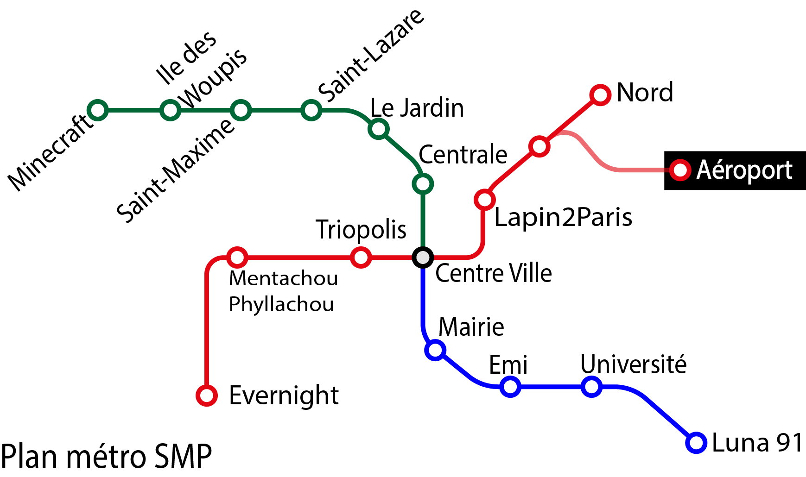

Triopolis est une ville dynamique et innovante, offrant une qualité de vie exceptionnelle à ses habitants. Avec ses infrastructures modernes, ses espaces verts et sa communauté accueillante, Triopolis est l'endroit idéal pour vivre, travailler et se divertir.
Découvrez les nombreuses attractions de Triopolis, des musées fascinants aux parcs magnifiques en passant par une scène culturelle vibrante. Que vous soyez un résident ou un visiteur, Triopolis a quelque chose à offrir à tout le monde.
Triopolis est une ville moderne et dynamique, située au cœur d'une région riche en histoire et en culture. Elle combine le meilleur de l'urbanisme contemporain avec un environnement naturel préservé, offrant ainsi un cadre de vie exceptionnel.
La ville est connue pour son engagement envers la durabilité et l'innovation, avec de nombreux projets visant à améliorer la qualité de vie de ses habitants tout en respectant l'environnement. Triopolis est également un centre culturel important, avec une scène artistique florissante et de nombreux événements tout au long de l'année.
Triopolis possède 3 lignes de métro :

La ville est également bien desservie par un réseau de bus efficace, ainsi que par des pistes cyclables pour les amateurs de vélo. De plus, Triopolis dispose d'une gare centrale qui facilite les déplacements vers les villes voisines et au-delà.